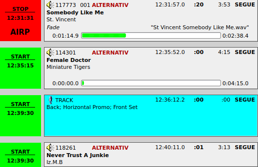
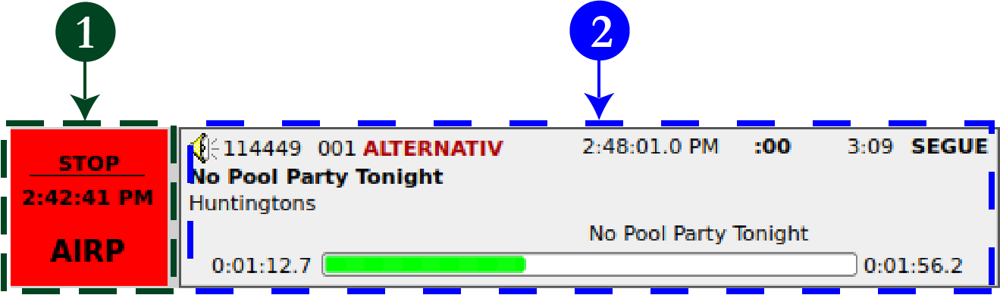
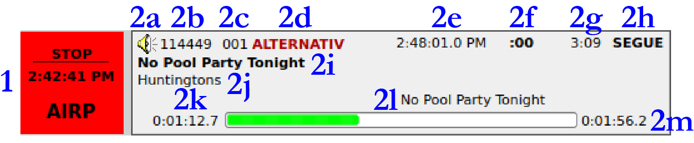
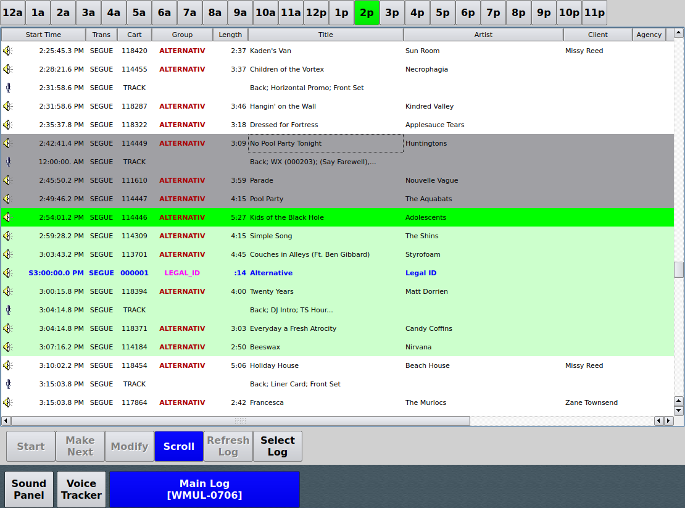
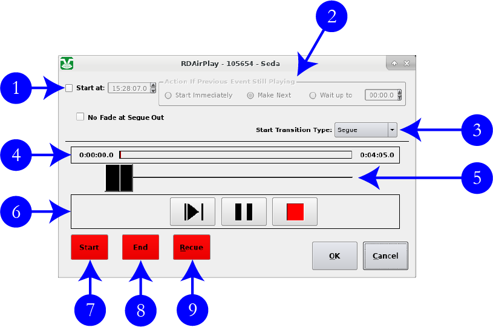
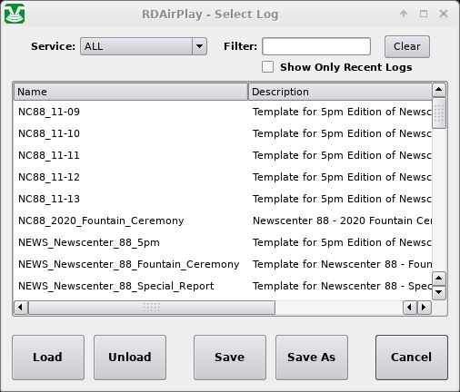

14.C. RD AirPlay — Main Log
Songs from the Main Log play through the "RIVDELL" channels on the board.
The log is controlled in three places: the Button Log widget, the Full Log, and the Mode Indicator Button. The Mode Indicator Button toggles among "Automatic", "Manual", and "LiveAssist" modes. See 14.B.2. Mode Indicator Button on Page 6 in Volume III.
|
Changes made to the log within RD AirPlay are not automatically saved. If the program exits, or if the log is unloaded without saving, any changes will be discarded. One may save the changes manually, see 14.C.5.b. Saving A Log on Page 19 in Volume III. |
14.C.1. Button Log
The Button Log widget takes up the left side of the window. It consists of several rows displaying the current song (or the next scheduled song when the log is stopped), and the next six (6) to ten (10) songs. (Only 4 rows are shown in the screenshot.) Each row consists of a button (1) and a cart label (2).



Double-click on a cart label (2) [not the button (1)] to bring up the "Edit Event" dialog box. 14.C.4. The Edit Event Dialog Box on Page 16 in Volume III.
-
Start / Stop Button: This button starts and stops this song. Its behavior is a little different depending on whether or not this is the top song in the log and whether or not it is playing.
-
Top Song — Currently Playing: Clicking this button will stop the song and the log. Even if the "Mode" is set to "Automatic", clicking this button to stop the song will also stop the log. The time displayed is the actual time the song started (2:42:41 PM). Below the time is the output channel used by that cart. At WMUL‑FM, the output channel will always be "AIRP".
-
Top Song — Stopped: Clicking this button will start the song. The time will be blank (until started).
-
Subsequent Song: Clicking this button will cause this song to be moved to the top of the log and immediately start playing. If a song was already playing, it will be faded out. Any songs that were above this in the log will be jumped over. The time displayed is the estimated start time of the cart. It will be blank if the log is stopped, or if there is a stop in the log before the cart.
-
-
Cart Label: Displays various information about the cart. The first three carts have more detailed labels than the remaining ones. Items k, l, and m are omitted from the final rows. (The information in parentheses after each explanation is what specifically is depicted on the figure above. E.G. 2b Cart Number is 114449.)
-
Icon: This icon indicates the type of the cart. (Audio Cart) 15.D. Cart Types on Page 52 in Volume III
-
Cart Number: The cart number. (114449)
-
Cut Number: The number of the cut within the cart. (001) 17.B. Carts with Multiple Cuts on Page 82 in Volume III
-
Group: The group to which the cart belongs. (ALTERNATIV)
-
Scheduled Start Time: For various reasons, this time will rarely match the actual start time of the song exactly. However; it will usually match within approximately ten (10) minutes. (2:48:01.0 PM).
If the song has been added to the playlist, the scheduled time will be 12:00:00 AM.
-
Talk Point: How far into the song the end of the talk point is. [Where the lyrics start.] (:00) 17.D. Cart Markers Explained on Page 89 in Volume III
-
Duration: The duration of the song. (3:09)
-
Transition: The transition type between the previous song and this song. (SEGUE) 15.E. Transitions on Page 53 in Volume III
-
Title: Song title. (No Pool Party Tonight)
-
Artist: Song artist. (Huntingtons)
-
Outcue: The outcue field of the cut. This item only appears once the song is playing and only if the field is set for the cut. (*Blank*)
-
Cut Name: The name given to this cut within the cart. (No Pool Party Tonight)
-
Elapsed / Remaining Time Indicator: Shows how much time has elapsed and how much time is remaining on the currently playing song. Displayed in two ways: as a horizontal bar-graph, and as numbers on either side of the graph. The green or red part represents the time that has elapsed and the white part represents the time remaining. The number on the left side is the time elapsed (0:01:12.7), the number on the right is the time remaining (0:01:56.2).
-
14.C.2. Using the Start Buttons on the Button Log
Click on one of the start buttons to start that song. If a song is currently playing, that song will fade out. If the song you clicked on is not at the top of the Button Log, the log will skip down to that point. The songs that were ahead of the clicked song will be skipped over.
Clicking the start button of the song that is playing will cause it to fade out and stop. The next song will not start, even if the Mode is "Automatic". You must click one of the start buttons to resume playback.
14.C.3. Full Log

The right side of the screen can display the full main log, the voice tracker, or the Sound Panel. If the voice tracker or the Sound Panel are visible, click the "Main Log" button to show the Main Log. The text on the second row is the name of the log that is loaded (WMUL-0706).
This widget shows the full day’s log. The full log allows the operator to scroll through the day’s log, edit it, and jump to a later point in the log.
The top row of buttons allow the operator to quickly scroll the display to a given hour. The current hour will be highlighted in green, even if the Main Log is playing from another point in the log.
The body of the widget displays the log. Scroll up and down the list to see more of the log. Scroll horizontally to see more metadata about each entry. The fields are the same as RD Log Edit. 16. RD Log Edit on Page 59 in Volume III
-
Entries in dark gray have been played.
-
An entry in bright green is a song that is currently playing.
-
The entries in light green are the ones that are displayed in the Button Log.
-
Entries in white are songs that have not played, either because they are scheduled for later or because they were skipped over.
-
Double-click on an entry to bring up the "Edit Event" dialog box. 14.C.4. The Edit Event Dialog Box on Page 16 in Volume III
-
For future timed events, the "Start Time" column displays the scheduled time. For past events, the actual airtime is displayed. In all other cases, it displays the same time as the Start Buttons on the Button Log.
14.C.3.a. Full Log Buttons
A row of six (6) buttons across the bottom of the widget allows you to control the log.
-
Start: When an entry is selected in the Full Log, click this button to jump the log to that point and immediately start playing that song. Any song that is already playing will be faded out. The behavior of this button is the same as the behavior of the start buttons over in the Button Log.
-
Make Next: When an entry is selected in the Full Log, click this button to jump the log to that point. Any song that is playing will continue to play. If the log is stopped, it will remain stopped.
-
Modify: When an entry is selected in the Full Log, click this button to bring up the "Edit Event" dialog box. 14.C.4. The Edit Event Dialog Box on Page 16 in Volume III. (You may also double-click on the entry itself.)
-
Scroll: When this button is activated (blue background), the Full Log will scroll along with the Button Log on the left-hand side of the screen, keeping those entries on the screen in the Full Log widget.
-
Refresh Log: If changes have been made to the currently loaded log using RD Log Edit, clicking this button will load those changes into the Main Log. This function is not necessary for music logs because those logs AutoRefresh. Special logs may or may not have AutoRefresh set. 16.C.8. AutoRefresh on Page 71 in Volume III
-
Select Log: Click this to bring up the "Select Log" dialog box. 14.C.5. The Select Log Dialog Box on Page 18 in Volume III
14.C.4. The Edit Event Dialog Box
The Edit Event dialog box allows the operator to make changes to the event entry in the log and to preview it.

-
Start At: Use this control to set a timed event. 15.B. Timed Events on Page 48 in Volume III
-
Action if Previous Event Still Playing: How RD AirPlay should behave if the "Start At" time is reached and another event is still playing. 15.B. Timed Events on Page 48 in Volume III
-
Start Transition Type: Sets the transition of the song. 15.E. Transitions on Page 53 in Volume III
-
Timeline: Shows where the start, end, and cursor are within the timeline of the song.
-
Cursor Control: Moves the cursor along the timeline.
-
Transport Controls: Play, Pause, and Stop the preview of the song. It plays through the "Preview" channel on the board and is metered by the "P.VW." meter.
-
Start: Click this button and then click in the timeline to adjust the start point of the song. This could be used to allow a pre-recorded program to be joined in progress. Any changes apply only to this event and not to the cart itself.
-
End: Click this button and then click in the timeline to adjust the end point of the song. Any changes apply only to this event and not to the cart itself.
-
Recue: Resets the "Start" back to the beginning of the song. It does not reset the "End".
14.C.4.a. Changing an Event into a Timed Event and Vice-Versa
To change a regular event into a timed event:
-
Double-click on the cart label in the Button Log or double-click on the entry in the Full Log. The "Edit Event" dialog box will open.
-
Check the "Start At" checkbox (1).
-
Enter the time that you want the event to start.
-
Set the "Action if Previous Event Still Playing" (2) to the desired value: "Start Immediately", "Make Next", or "Wait Up To".
-
Click "OK". The "Edit Event" dialog box will close.
14.C.4.b. Changing the Transition Type of an Event
-
Double-click on the cart label in the Button Log or double-click on the entry in the Full Log. The "Edit Event" dialog box will open.
-
Change the "Start Transition Type" (3) to the desired value: "Segue", "Play", "Stop".
-
Click "OK". The "Edit Event" dialog box will close.
14.C.4.c. Changing the Start and End points of an Event
It is possible to edit an individual event to change the start and end point. For example: to play just the second segment from a pre-recorded program, such as Herd Roundup. Any changes would only apply to this single event in the log and not to the cart itself.
-
Double-click on the cart label in the Button Log or double-click on the entry in the Full Log. The "Edit Event" dialog box will open.
-
Click the "Start" button (7) to begin editing the start point. The <Cursor Control> (5), <Timeline> text (4), and the bars on the <Play> button (6) will turn red.
-
Use the <Cursor Control> (5) and the <Transport Controls> (6) to set the desired start point.
-
Click the "Start" button (7) again to confirm the desired start point.
-
Repeat steps 2-4 with the "End" button (8) to set the desired end point.
-
If you need to reset, click the "Recue" button (9) to reset the start point to the beginning. It does not reset the end point.
-
Click "OK". The "Edit Event" dialog box will close.
14.C.5. The Select Log Dialog Box
The "Select Log" dialog box allows the operator save the current log and to load a different log than the one that is loaded currently. When loading a new log, any song that is playing will continue to play, but the rest of the log will be unloaded and replaced by the new log.

14.C.5.a Loading a Different Log
-
Click the "Main Log" button to show the Main Log. The text on the second row is the name of the log that is loaded.
-
Click the "Select Log" button and the "Select Log" dialog box will appear.
-
Scroll through this list to see all of the logs. Use the "Filter" box to search for a specific log. Check the "Show Only Recent Logs" box to show only those logs that were created recently. Music logs names all have the format "WMUL-MMDD", where MM is the month and DD is the day.
-
Select the log that you wish to load.
-
Click the "Load" button. That log will load. If a song was playing, that song will continue to play, but the rest of the log will be unloaded and replaced by the new log.
14.C.5.b. Saving A Log
If you have made changes to the current log and wish to "Save" or "Save As" the log, you can do so using the "Select Log" dialog box.
-
Click the "Main Log" button to show the Main Log. The text on the second row is the name of the log that is loaded.
-
Click the "Select Log" button and the "Select Log" dialog box will appear.
-
To overwrite the existing log with your changes, click the "Save" button.
-
To create a new log, click the "Save As" button. The "Create Log" dialog box will appear.

-
Enter the name of the new log. It must be unique. Spaces are not allowed. Use underscores "_" instead. Use one of the standard prefixes for Program Templates or Program Episodes. 16.B.1. Naming Your Log on Page 63 in Volume III
-
Make certain the service is set to "WMUL".
-
Click "OK". The dialog boxes will close and the newly saved log will be opened.